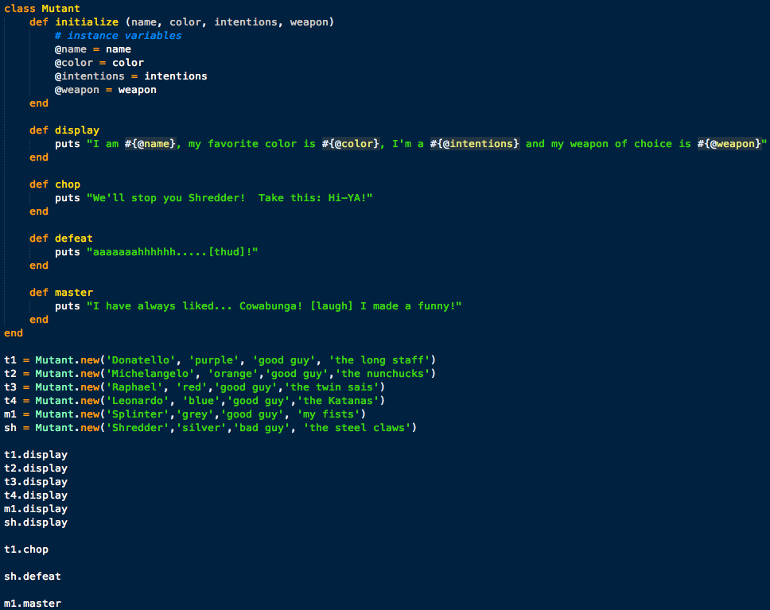
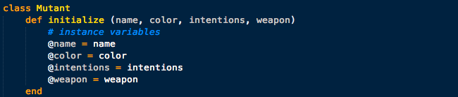
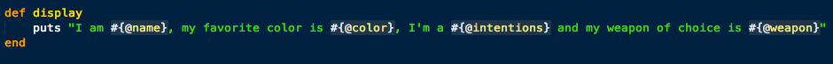
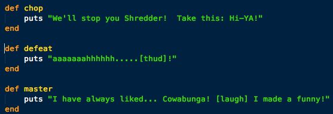
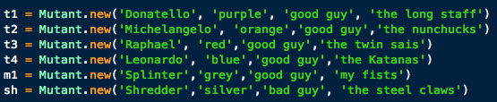
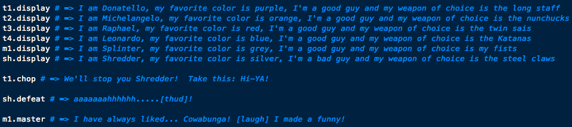
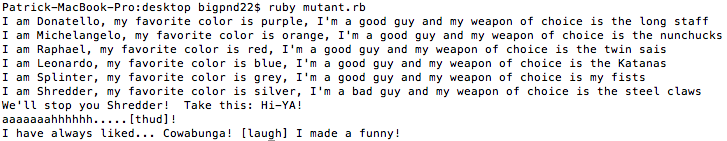

WHAT EXACTLY IS A RUBY CLASS?
A class, in essence, is a map or blueprint for an object. An object is an instance of a class. Things an object knows about itself are called "instance variables." They represent an object's state. This basically means that instance variables are an objects data, for example, like the quantity and the product ID. These can have unique values for each object of that type. A quote by Hal Fulton, author of "The Ruby Way," describes it best in my opinion:
"An object is an entity that serves as a container for data and also controls access to the data. Associated with an object is a set of attributes, which are essentially no more than variables belonging to that object. Also associated with an object is a set of functions that provide an interface to the functionality of the object, called methods."
In the example I'll be showing you today, we'll be using a Mutant (turtle) class that has several different types of properties for each Mutant, and each Mutant will have its own name, color, label and weapon. Let's show the entire code for the Mutant class and then break it down, section by section:
1. INITIALIZE
Alright, so the first thing we did, which might be obvious, is assign the new class a name which I announced previously to be, Mutant. Now, when creating your objects you would make them equal to "Mutant.new([various properties])." I'll get more into this later. But for now, we move on to create our initializing method for our Mutant class which is "initialize." In the parenthesis next to it you name the various properties you want for each new object you create. In this case: name, color, intentions and weapon. Below this we put our instance variables utilizing the "@" sign. This can also be done using the attr_accessor like this, "attr_accessor :name, :color, :intentions, :weapons." But for today, we'll stick with the basics. Now, lets take a look at the next section.
2. DISPLAY (METHOD)
Now we create our first method that will call on these instance variable. In our example below, we decide to print a string statement that calls all the instances of objects that will be created. To do this, we simply input all our instance variables, again, using the "@" sign but also by placing them in curly brackets and starting with the hash ("#") symbol, like so "#{@[variable]}." As you'll see later, we create an object for various characters from the Mutant Ninja Turtles and this method will introduce each character (object) and provide some information about them in an easy to read sentence statement.
3. SOME EXTRA SAYINGS (...ERR METHODS)
Next, we wanted to add a couple more sayings and statements (or what some might consider methods) for the objects to call on. These methods call various string statements that are relevant to the context of the class which ultimately helps you understand how, why and when these methods should be used. Its important to using methods, objects, name of instance variables in a coherent way because this makes it much easier to understand for yourself later or for someone else who's never looked at it before.
4. CREATING CHARACTERS (A.K.A OBJECTS!)
Ok, so we've defined our class, the instance variables and the methods we want to be able to call on our objects but now we just need the objects themselves. Below, we've created various variable names such as t1 and t2. In order to assign these variables as a new instance of the Mutant class, we make those variables equal to "Mutant.new([properties go here])." And BOOM, you got yourself some new objects for your Mutant class! Now, as you can see, we have mostly good guys assigned to the instance variable "intentions," but we also have one bad guy - Shredder! But we'll deal with him later, let's move one.
5. CALLING SOME METHODS FOR OUR CHARACTERS
The last thing we want to do is call some of our previously created methods on our newly created objects. To do so, simply use dot notation for each of the methods you'd like to call, like this, "t1.disply" or "m1.master". As you can see below, calling each method prints the saying we assigned to that method previously. Pretty sweet!
6. CONSOLE RESULTS - VICOTRY (THE GOOD GUYS ALWAYS WIN!)
So, in the end when we call the ruby file with the new class Mutant and all the objects and methods we called, the result is seen in the image below. It looks as though that Shredder was defeated by the ninja turtles once again!

CONCLUSION: